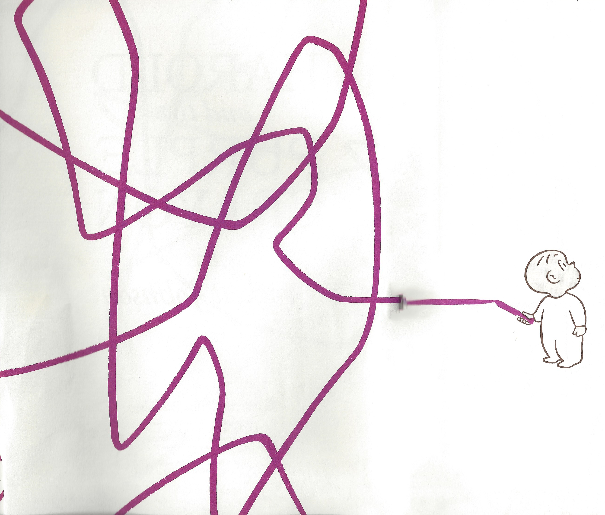

Harold and the Purple Crayon
adapted from the stories by Crocket Johnson

One evening, after thinking it over for some time, Harold decided to go for a walk in the moonlight.
There wasn't any moon, and Harold needed a moon for a walk in the moonlight.
And he needed something to walk on.
He made a long straight path so he wouldn't get lost.
Would you like to continue?